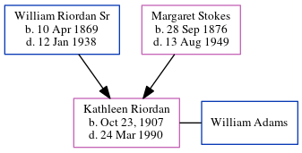

Kathleen Cecilia Adams (née Riordan) 1907 - 1990
[ Home ] | [ Calendar ] | [ Surnames Index ] | [ Census Index ] | [ Family History ]The child of William Riordan Sr and Margaret Stokes, Kathleen Riordan, the great-aunt of Michele Copp (née Phillips), was born in Atlanta in Oct 23, 19071,2,3,4,5. She and married William Adams in Georgia, USA on Apr 22, 1947 (Fr. James Perry, Immaculate Conception Church).
During her life, she was living in Atlanta Ward 3, Fulton, Georgia in 19201; in Atlanta, Fulton, Georgia in 19352; in Atlanta, Fulton, Georgia on Apr 1, 19402; and in Fulton3.
She died on Mar 24, 1990 in Atlanta, , Georgia3,4,5.
Parents
- William Joseph Sr was born on Apr 10, 1869
- Margaret Louise was born on Sep 28, 1876
Citations
- 1920 United States Federal Census Online publication - Provo, UT, USA: MyFamily.com, Inc., 2005. For details on the contents of the film numbers, visit the following NARA web page: NARA. Note: Enumeration Districts 819-839 on roll 323 (Chicago City.Original data - United States of America
- 1940 United States Federal Census Ancestry.com Operations, Inc. (Age: 31; Marital Status: Single; Relation to Head of House: Daughter)
- Georgia Deaths, 1919-98 Online publication - Provo, UT, USA: The Generations Network, Inc., 2001.Original data - State of Georgia. Indexes of Vital Records for Georgia: Deaths, 1919-1998. Gerogia, USA: Georgia Heatlh Department, Office of Vital Records, 1998.Original data: State
- OneWorldTree Online publication - Provo, UT, USA: MyFamily.com, Inc.
- Social Security Death Index Online publication - Provo, UT, USA: MyFamily.com, Inc., 2006.Original data - Social Security Administration. Social Security Death Index, Master File. Social Security Administration.Original data: Social Security Administration. Social Security Death Inde
Family Tree
Generated by ged2site. Last updated on Jun 6, 2024